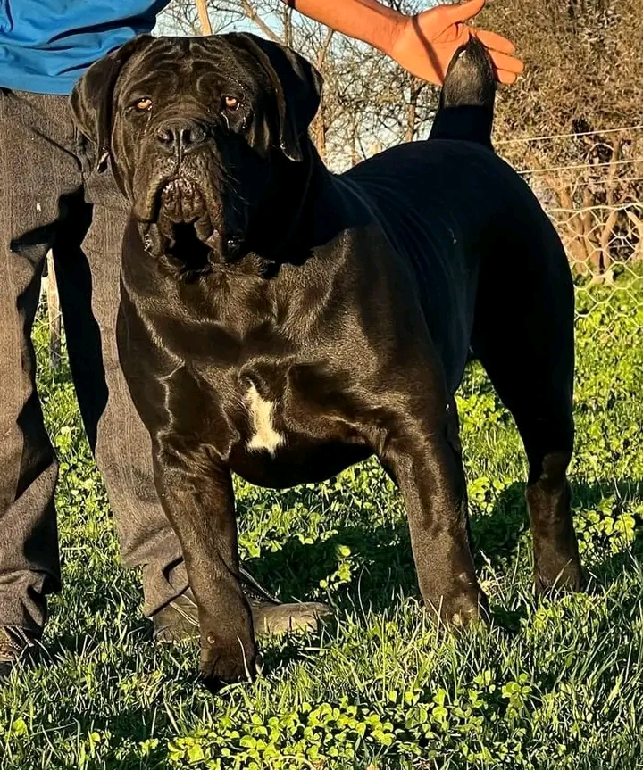
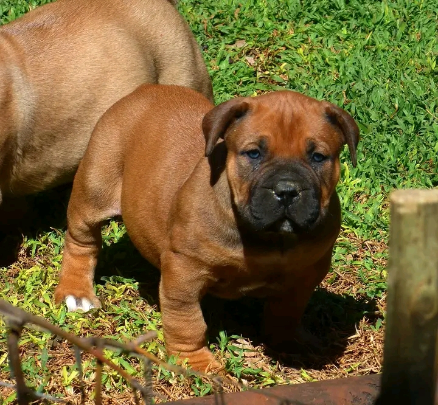

Having grown from the Luweero triangle, developed a mindset to start education, passed through the levels of pre-primary education joined Katikamu SDA for advanced learning , later i joined Multitech Business School. I am now doing a diploma in Information Technology. Above are the types of dogs which i personally rear. These are boerboels normally imported from South Africa making then South African based.
 
MISSION
To create an informed society about information and technology
VISION
To help an African child cope up with the modern society
copyright© The lifestyle of Joseph